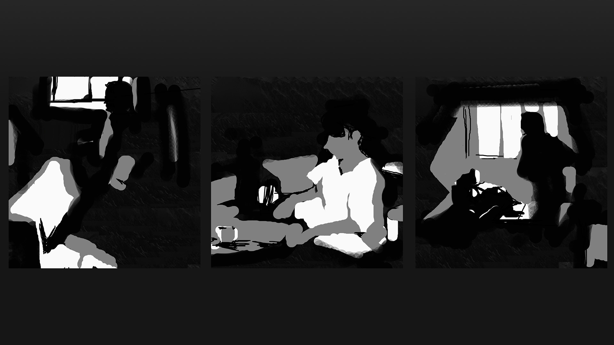
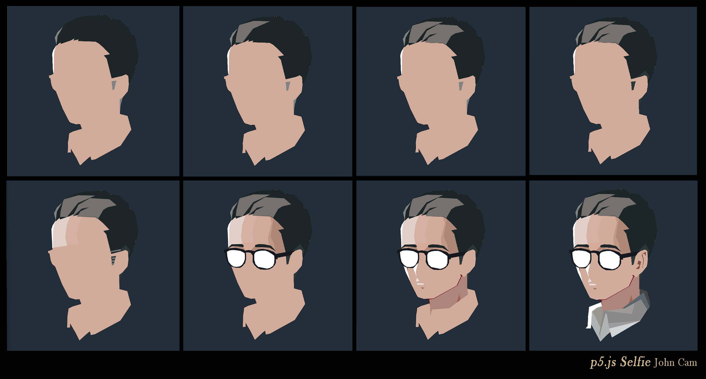

DIY Photoshop
A p5.js-based interactive drawing tool inspired by Photoshop — featuring brushes that were made to create grayscale paintings.
Press number keys 1–9 or 0 to switch brushes. Use X to clear, and P to save your art.
See Dropdown Below for the Code
View Source Code (Credits to Prof James Morgan for Base Source Code)
//this makes use of absolute urls so you can just copy and paste the entire code too!
var initials ='jc'; //initials
var choice = '4'; // starting choice is 4 which is a pen
var screenbg = 250; // off white background
var lastscreenshot = 61;
// brush size
var brush2Size = 3; // size of brush 4 (pen)
var eraserSize = 25; // size of brush 1 (eraser)
var brush4Size = 40; // size of brush 2 (Round Opacity Brush)
var brush4Alpha = 60; // 0–255 transparency for soft brush (tool 2)
// landscape brush images located in same folder
var mountainImg, treeImg, tree2Img, birdImg, flowerImg, groundBrushImg;
function preload() {
mountainImg = loadImage('./diyps2025/mnt.png');
treeImg = loadImage('./diyps2025/tree.png');
tree2Img = loadImage('./diyps2025/tree2.png');
birdImg = loadImage('./diyps2025/birdbrush.png');
flowerImg = loadImage('./diyps2025/flower.png');
groundBrushImg = loadImage('./diyps2025/brush1.png');
}
function setup() {
createCanvas(600, 600); // canvas size
background(screenbg);
imageMode(CENTER);
}
function draw() {
if (keyIsPressed) {
choice = key;
clear_print();
}
if (mouseIsPressed){
newkeyChoice(choice);
}
}
function softRoundStroke(x1, y1, x2, y2) {
noStroke();
fill(0, 0, 0, brush4Alpha);
circle(mouseX, mouseY, brush4Size);
}
function newkeyChoice(toolChoice) {
if (toolChoice == '1' ) { // eraser that just paints bg color
noStroke();
fill(screenbg);
circle(mouseX, mouseY, eraserSize);
} else if (toolChoice == '2') { // opacity round brush
softRoundStroke(pmouseX, pmouseY, mouseX, mouseY);
} else if (toolChoice == '3') { // hard round gray
noStroke();
fill(128);
circle(mouseX, mouseY, 30); // feel free to change the number to your liking
} else if (toolChoice == '4') { // fine line brush
stroke(0);
strokeWeight(brush2Size);
line(mouseX, mouseY, pmouseX, pmouseY);
} else if (toolChoice == '5') { //mountain
image(mountainImg, mouseX, mouseY);
} else if (toolChoice == '6') { //tree
image(treeImg, mouseX, mouseY);
} else if (toolChoice == '7') { //tree2
image(tree2Img, mouseX, mouseY);
} else if (toolChoice == '8') { //birds
image(birdImg, mouseX, mouseY);
} else if (toolChoice == '9') { //flower
image(flowerImg, mouseX, mouseY);
} else if (toolChoice == '0') { //brush
image(groundBrushImg, mouseX, mouseY);
}
}
function clear_print() {
if (key == 'x' || key == 'X') {
background(screenbg);
} else if (key == 'p' || key == 'P') {
saveme();
}
}
function saveme(){
filename = initials + day() + hour() + minute() + second();
if (second() != lastscreenshot) {
saveCanvas(filename, 'jpg');
key = "";
}
lastscreenshot = second();
}
Sample of what I created, mainly used this as a timed value practice painting app.

p5.js Selfie
A p5.js-based selfie created with processing

View Source Code
// There is a lot of layers in here, I tried to tackle this like how you would do a drawing with many layers in Photoshop or Illustrator.
// Each detail is layered in a way with layer hierarchy in mind, drawing over the base and layering details to create a rendered piece.
// A mini guide is to set up your drawing/sketch in Photoshop with the same canvas dimensions, use the information viewer to get the x and y details.
// You can also pre color/ render in photoshop and get the RGB values and plug them in here.
// Drawing tip is to keep how the shapes and color would be since drawing this method is limited & time consuming
function setup() {
createCanvas(600, 600);
}
function draw() {
background(34, 46, 58); // bg clr
strokeWeight(0.5);
stroke(0); // outline
// base layer, used for outline and guide to get other details right.
fill(209, 171, 155);
beginShape();
vertex(420, 302);
vertex(424, 272);
vertex(432, 260);
vertex(448, 215);
vertex(456, 177);
vertex(445, 114);
vertex(426, 96);
vertex(420, 81);
vertex(392, 54);
vertex(361, 49);
vertex(331, 35);
vertex(310, 38);
vertex(273, 40);
vertex(237, 49);
vertex(212, 61);
vertex(198, 68);
vertex(195, 77);
vertex(178, 93);
vertex(165, 113);
vertex(168, 129);
vertex(171, 140);
vertex(160, 160);
vertex(156, 172);
vertex(160, 239);
vertex(159, 242);
vertex(150, 246);
vertex(144, 247);
vertex(145, 256);
vertex(149, 256);
vertex(153, 280);
vertex(158, 293);
vertex(169, 303);
vertex(172, 311);
vertex(192, 363);
vertex(215, 408);
vertex(219, 412);
vertex(239, 418);
vertex(239, 418);
vertex(253, 417);
vertex(259, 433);
vertex(229, 442);
vertex(215, 449);
vertex(211, 479);
vertex(210, 517);
vertex(221, 516);
vertex(221, 503);
vertex(239, 534);
vertex(253, 562);
vertex(277, 540);
vertex(289, 530);
vertex(292, 543);
vertex(307, 540);
vertex(395, 492);
vertex(432, 436);
vertex(419, 388);
vertex(392, 381);
vertex(392, 358);
vertex(401, 325);
endShape(CLOSE);
//skin 1
noStroke();
fill(212, 177, 163);
beginShape();
vertex(222, 105);
vertex(273, 103);
vertex(252, 152);
vertex(244, 191);
vertex(252, 225);
vertex(207, 225);
vertex(202, 199);
vertex(205, 166);
vertex(222, 105);
endShape(CLOSE);
// skin 2
noStroke();
fill(226, 207, 200);
beginShape();
vertex(177, 129);
vertex(224, 116);
vertex(209, 158);
vertex(204, 198);
vertex(210, 229);
vertex(162, 236);
vertex(160, 182);
vertex(164, 158);
vertex(177, 129);
endShape(CLOSE);
// skin 3
noStroke();
fill(192, 152, 134);
beginShape();
vertex(304, 125);
vertex(325, 139);
vertex(312, 207);
vertex(324, 233);
vertex(326, 251);
vertex(302, 236);
vertex(300, 202);
vertex(313, 151);
vertex(304, 125);
endShape(CLOSE);
// skin 4
noStroke();
fill(174, 135, 119);
beginShape();
vertex(321, 129);
vertex(366, 165);
vertex(369, 257);
vertex(333, 264);
vertex(328, 260);
vertex(321, 226);
vertex(309, 200);
vertex(321, 129);
endShape(CLOSE);
//hair base
noStroke();
fill(28, 37, 39);
beginShape();
vertex(172, 143);
vertex(180, 135);
vertex(185, 132);
vertex(186, 137);
vertex(211, 128);
vertex(218, 126);
vertex(233, 118);
vertex(231, 125);
vertex(248, 121);
vertex(246, 127);
vertex(307, 129);
vertex(319, 136);
vertex(335, 150);
vertex(357, 173);
vertex(336, 177);
vertex(346, 189);
vertex(363, 257);
vertex(398, 249);
vertex(413, 243);
vertex(421, 249);
vertex(423, 279);
vertex(437, 251);
vertex(450, 205);
vertex(456, 177);
vertex(449, 132);
vertex(444, 113);
vertex(426, 97);
vertex(419, 79);
vertex(392, 54);
vertex(370, 50);
vertex(361, 50);
vertex(342, 35);
vertex(307, 38);
vertex(273, 40);
vertex(237, 49);
vertex(214, 59);
vertex(199, 67);
vertex(196, 75);
vertex(183, 87);
vertex(167, 108);
vertex(165, 116);
vertex(168, 132);
vertex(172, 143);
endShape(CLOSE);
//h1
noStroke();
fill(118, 113, 111);
beginShape();
vertex(185, 136);
vertex(188, 107);
vertex(196, 74);
vertex(200, 66);
vertex(249, 52);
vertex(308, 53);
vertex(248, 79);
vertex(210, 128);
vertex(185, 128);
vertex(185, 136);
endShape(CLOSE);
//h2
noStroke();
fill(118, 113, 111);
beginShape();
vertex(229, 126);
vertex(234, 123);
vertex(261, 99);
vertex(287, 94);
vertex(257, 108);
vertex(244, 127);
vertex(307, 128);
vertex(318, 134);
vertex(336, 103);
vertex(351, 94);
vertex(382, 87);
vertex(357, 66);
vertex(290, 62);
vertex(250, 85);
vertex(229, 126);
endShape(CLOSE);
//h3
noStroke();
fill(44, 54, 56);
beginShape();
vertex(363, 258);
vertex(397, 249);
vertex(413, 244);
vertex(420, 248);
vertex(424, 263);
vertex(429, 248);
vertex(414, 226);
vertex(389, 248);
vertex(362, 258);
vertex(363, 258);
endShape(CLOSE);
//white overlay
noStroke();
fill(255);
beginShape();
vertex(162, 178);
vertex(164, 161);
vertex(170, 142);
vertex(160, 158);
vertex(156, 171);
vertex(159, 239);
vertex(162, 234);
vertex(162, 177);
endShape(CLOSE);
// gray over
noStroke();
fill(129, 131, 131);
beginShape();
vertex(171, 141);
vertex(175, 109);
vertex(193, 78);
vertex(175, 95);
vertex(165, 115);
vertex(171, 141);
endShape(CLOSE);
// gr 2
noStroke();
fill(44, 54, 56);
beginShape();
vertex(363, 267);
vertex(366, 298);
vertex(372, 296);
vertex(377, 275);
vertex(380, 265);
vertex(363, 267);
endShape(CLOSE);
//skn 4
noStroke();
fill(44, 54, 56);
beginShape();
vertex(391, 331);
vertex(391, 356);
vertex(392, 374);
vertex(395, 348);
vertex(402, 323);
vertex(391, 331);
endShape(CLOSE);
//skn 5
noStroke();
fill(214, 171, 154);
beginShape();
vertex(208, 221);
vertex(253, 221);
vertex(257, 233);
vertex(239, 251);
vertex(221, 253);
vertex(208, 221);
endShape(CLOSE);
//skn 6
noStroke();
fill(174, 135, 119);
beginShape();
vertex(253, 233);
vertex(285, 232);
vertex(293, 247);
vertex(261, 249);
vertex(234, 253);
vertex(253, 233);
endShape(CLOSE);
//skn 7
noStroke();
fill(174, 135, 119);
beginShape();
vertex(182, 231);
vertex(210, 234);
vertex(221, 251);
vertex(184, 244);
vertex(182, 231);
endShape(CLOSE);
//skn 8
noStroke();
fill(192, 150, 134);
beginShape();
vertex(186, 230);
vertex(194, 245);
vertex(157, 245);
vertex(163, 237);
vertex(186, 237);
endShape(CLOSE);
//skn 9
noStroke();
fill(192, 150, 134);
beginShape();
vertex(273, 234);
vertex(308, 236);
vertex(328, 253);
vertex(331, 265);
vertex(297, 249);
vertex(272, 248);
vertex(273, 233);
endShape(CLOSE);
//eyebrows
//lbrow
noStroke();
fill(28, 37, 39);
beginShape();
vertex(171, 227);
vertex(207, 226);
vertex(212, 229);
vertex(214, 233);
vertex(212, 237);
vertex(190, 234);
vertex(172, 234);
vertex(160, 240);
vertex(160, 237);
vertex(171, 227);
endShape(CLOSE);
//rbrow
noStroke();
fill(28, 37, 39);
beginShape();
vertex(255, 229);
vertex(268, 226);
vertex(288, 227);
vertex(310, 232);
vertex(329, 252);
vertex(305, 239);
vertex(279, 237);
vertex(256, 237);
vertex(253, 234);
vertex(255, 229);
endShape(CLOSE);
//glasses
//glasses frame
noStroke();
fill(21, 24, 31);
beginShape();
vertex(144, 246);
vertex(162, 241);
vertex(185, 239);
vertex(212, 245);
vertex(219, 249);
vertex(231, 247);
vertex(244, 249);
vertex(251, 251);
vertex(264, 245);
vertex(280, 243);
vertex(299, 246);
vertex(320, 253);
vertex(328, 260);
vertex(326, 261);
vertex(398, 248);
vertex(387, 256);
vertex(381, 265);
vertex(334, 274);
vertex(334, 279);
vertex(328, 279);
vertex(328, 291);
vertex(323, 301);
vertex(315, 309);
vertex(303, 315);
vertex(289, 316);
vertex(273, 315);
vertex(261, 309);
vertex(251, 299);
vertex(245, 288);
vertex(246, 267);
vertex(239, 257);
vertex(229, 255);
vertex(221, 256);
vertex(222, 263);
vertex(222, 279);
vertex(219, 292);
vertex(209, 304);
vertex(201, 309);
vertex(187, 309);
vertex(177, 307);
vertex(164, 301);
vertex(155, 288);
vertex(151, 276);
vertex(148, 257);
vertex(143, 257);
vertex(144, 246);
endShape(CLOSE);
//ll
noStroke();
fill(255);
beginShape();
vertex(154, 253);
vertex(164, 248);
vertex(177, 247);
vertex(190, 248);
vertex(202, 250);
vertex(212, 255);
vertex(217, 258);
vertex(218, 266);
vertex(218, 277);
vertex(215, 288);
vertex(209, 298);
vertex(201, 304);
vertex(189, 306);
vertex(178, 305);
vertex(168, 298);
vertex(160, 288);
vertex(157, 277);
vertex(155, 265);
vertex(154, 253);
endShape(CLOSE);
//rl
noStroke();
fill(255);
beginShape();
vertex(251, 262);
vertex(255, 255);
vertex(265, 251);
vertex(277, 249);
vertex(290, 249);
vertex(301, 253);
vertex(314, 261);
vertex(322, 267);
vertex(323, 277);
vertex(322, 292);
vertex(318, 302);
vertex(308, 309);
vertex(298, 312);
vertex(296, 312);
vertex(265, 306);
vertex(255, 296);
vertex(251, 281);
vertex(251, 262);
endShape(CLOSE);
// overpaint
// highlight
noStroke();
fill(255);
beginShape();
vertex(218, 291);
vertex(210, 323);
vertex(213, 340);
vertex(201, 310);
vertex(218, 291);
endShape(CLOSE);
// 2) subsurface
noStroke();
fill(109, 56, 34);
beginShape();
vertex(176, 307);
vertex(181, 308);
vertex(182, 323);
vertex(185, 338);
vertex(176, 307);
endShape(CLOSE);
// highlight 2
noStroke();
fill(255);
beginShape();
vertex(167, 302);
vertex(174, 306);
vertex(178, 307);
vertex(191, 359);
vertex(174, 323);
vertex(167, 302);
endShape(CLOSE);
// face h3
noStroke();
fill(232, 223, 220);
beginShape();
vertex(214, 343);
vertex(223, 354);
vertex(210, 358);
vertex(214, 343);
endShape(CLOSE);
// face h4
noStroke();
fill(232, 223, 220);
beginShape();
vertex(214, 362);
vertex(238, 363);
vertex(238, 368);
vertex(215, 368);
vertex(214, 362);
endShape(CLOSE);
// detail
noStroke();
fill(158, 115, 99);
beginShape();
vertex(228, 377);
vertex(242, 378);
vertex(234, 383);
vertex(228, 377);
endShape(CLOSE);
// lineart/ occlusion
noStroke();
fill(108, 5, 28);
beginShape();
vertex(253, 417);
vertex(273, 416);
vertex(355, 371);
vertex(371, 337);
vertex(367, 332);
vertex(371, 332);
vertex(376, 337);
vertex(356, 374);
vertex(275, 418);
vertex(263, 430);
vertex(260, 439);
vertex(257, 426);
vertex(253, 417);
endShape(CLOSE);
// d3
noStroke();
fill(174, 133, 122);
beginShape();
vertex(258, 419);
vertex(274, 417);
vertex(357, 371);
vertex(373, 338);
vertex(383, 340);
vertex(392, 331);
vertex(392, 376);
vertex(395, 402);
vertex(329, 450);
vertex(268, 455);
vertex(262, 477);
vertex(261, 446);
vertex(258, 419);
endShape(CLOSE);
// d4
noStroke();
fill(157, 99, 83);
beginShape();
vertex(355, 430);
vertex(362, 409);
vertex(365, 401);
vertex(368, 418);
vertex(364, 425);
vertex(355, 430);
endShape(CLOSE);
//ear
noStroke();
fill(129, 77, 64);
beginShape();
vertex(403, 259);
vertex(416, 252);
vertex(416, 267);
vertex(411, 259);
vertex(403, 259);
endShape(CLOSE);
//e1
noStroke();
fill(129, 77, 64);
beginShape();
vertex(403, 308);
vertex(407, 281);
vertex(401, 262);
vertex(403, 259);
vertex(409, 281);
vertex(404, 308);
vertex(403, 308);
endShape(CLOSE);
//e2
noStroke();
fill(129, 77, 64);
beginShape();
vertex(380, 311);
vertex(394, 298);
vertex(386, 294);
vertex(389, 282);
vertex(399, 286);
vertex(392, 311);
vertex(380, 311);
endShape(CLOSE);
//collar
noStroke();
fill(176, 179, 179);
beginShape();
vertex(224, 456);
vertex(236, 471);
vertex(258, 521);
vertex(272, 464);
vertex(279, 467);
vertex(287, 530);
vertex(254, 562);
vertex(238, 533);
vertex(219, 499);
vertex(224, 456);
endShape(CLOSE);
//c1
noStroke();
fill(153, 150, 143);
beginShape();
vertex(224, 456);
vertex(242, 444);
vertex(260, 438);
vertex(264, 476);
vertex(255, 515);
vertex(237, 478);
vertex(224, 456);
endShape(CLOSE);
//c2
noStroke();
fill(255);
beginShape();
vertex(257, 426);
vertex(260, 440);
vertex(242, 445);
vertex(224, 458);
vertex(220, 517);
vertex(201, 517);
vertex(209, 508);
vertex(210, 477);
vertex(214, 442);
vertex(257, 426);
endShape(CLOSE);
//c3
noStroke();
fill(68, 68, 70);
beginShape();
vertex(393, 379);
vertex(420, 388);
vertex(429, 419);
vertex(432, 437);
vertex(428, 441);
vertex(406, 394);
vertex(394, 403);
vertex(393, 379);
endShape(CLOSE);
//c4
noStroke();
fill(89, 100, 108);
beginShape();
vertex(408, 392);
vertex(429, 443);
vertex(419, 455);
vertex(395, 418);
vertex(339, 450);
vertex(328, 450);
vertex(408, 392);
endShape(CLOSE);
//c5
noStroke();
fill(137, 137, 137);
beginShape();
vertex(398, 416);
vertex(421, 451);
vertex(396, 490);
vertex(283, 503);
vertex(277, 466);
vertex(272, 465);
vertex(253, 535);
vertex(254, 552);
vertex(250, 534);
vertex(266, 455);
vertex(336, 450);
vertex(398, 416);
endShape(CLOSE);
//c6
noStroke();
fill(159, 153, 153);
beginShape();
vertex(376, 429);
vertex(367, 463);
vertex(368, 467);
vertex(269, 456);
vertex(342, 447);
vertex(376, 429);
endShape(CLOSE);
//c7
noStroke();
fill(155, 157, 158);
beginShape();
vertex(395, 490);
vertex(286, 517);
vertex(282, 499);
vertex(395, 490);
endShape(CLOSE);
//c8
noStroke();
fill(209, 213, 216);
beginShape();
vertex(395, 491);
vertex(295, 548);
vertex(285, 517);
vertex(395, 491);
endShape(CLOSE);
}
